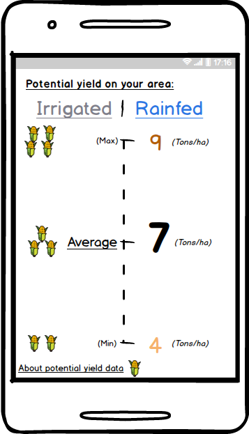

About potential yield data
Using the location of the registered plot, its associated data (e.g. soil maps and weather), selected cultivar characteristics, and water management (rain-fed or fully irrigated), AgroTutor displays historic potential yield estimates that are not limited by nutrients nor pests. These estimates are the outputs of the Environmental Policy Integrated Climate (EPIC) crop model, ran for the time period 1980-2010. The results show information about the maximum yield potentially attained, but also the variability of these results for the selected location. The conditions used to calculate potential performance using the EPIC crop model are shown below:
|
Agronomic characteristic |
Conditions |
|
Nutrient management / fertilizer |
Application in optimal time and quantity. Elimination of nutrient deficit. |
|
Irrigation |
Application in optimal quantity and time. Elimination of water deficits. |
|
Climate |
The climate variables considered are solar radiation, temperature and precipitation. If irrigation is used, precipitation is not considered. The climate data have a resolution of 25 km x 25 km. |
|
Soil |
The soil characteristics taken into consideration are depth, texture, pH and organic matter content. Since the required nutrients are applied, the soil is considered as storage and water supply. Only the predominant soil(s) in the region are considered. |
|
Slope |
Slope affects surface water runoff. The regional average is used. |
|
Planting dates |
The planting dates used were estimated according to weather and reported planting dates. The sowing date is the same in each year and geographical location, except when the temperature is below the minimum which delays crop sowing. |